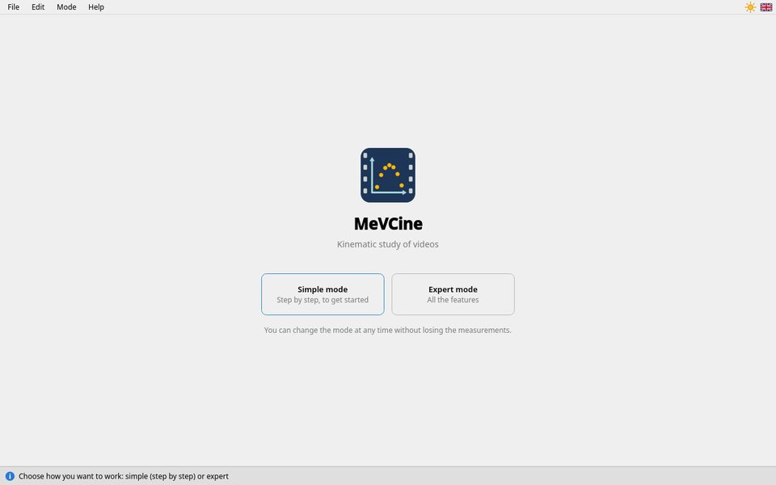
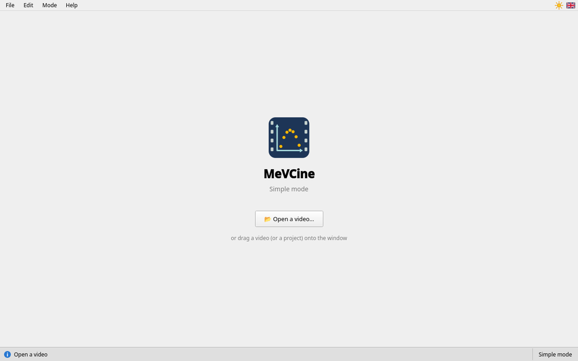

Getting started
Starting MeVCine, choosing the mode, opening a video
Starting MeVCine
Double-click on MeVCine (or on the shortcut prepared by your teacher). A splash screen shows for two seconds; a click makes it disappear at once.

Click on the Simple mode card (step by step, to get started) or on the Expert mode card (all the features). If in doubt, take simple mode: you can switch from one to the other at any time, without losing the measurements, with the Mode menu.
Opening a video

- 📂 Open a video…: your own, filmed with a phone or a camera (Ctrl+O);
- or drag the video file onto the MeVCine window.
MeVCine reads videos from phones (iPhone, Android) and cameras, even filmed in portrait or in slow motion. If the video is lying on its side, you can rotate it at step 1. If an “Unreadable video” message appears, ask your teacher, or see Filming a motion.
Resuming a piece of work
- File › Open a project… reopens saved work (you can also drag the project file onto the window): the video, the axes, the scale and the measurements come back. The video must be next to the project file, or at its original place.
- File › Recover previous work… reopens the automatic backup, after an accidental closing or a crash. See Nothing is lost without warning.
MeVCine never reopens the previous student's video by itself: everyone starts from a clean screen.
The menus
At the very top, the menus:
| File | open a video, open or save a project (video, axes, scale, measurements, to continue later), copy for Python, save as CSV |
|---|---|
| Edit | undo or redo the last point, start over |
| Mode | change mode, without losing the measurements |
| Help | this guide (F1: at the page of what you are doing), “About” |
At the far right, on the same line:
| ☀ or ☾ | the theme: light (sun) or dark (moon). A click switches to the other one; your choice is remembered. |
|---|---|
| Flag | the language of the interface: French or English. A click switches to the other one; it is remembered too. |
Most buttons explain what they do when the mouse rests on them for a moment. Texts too small, on the board or the projector? Ctrl++ enlarges the whole interface, Ctrl+− shrinks it, Ctrl+0 brings it back to its normal size.
Quitting
Close the window, or File › Quit (Ctrl+Q). If your measurements have been neither copied nor saved, MeVCine reminds you before closing.